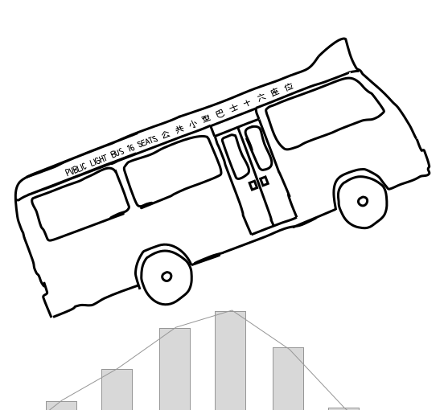
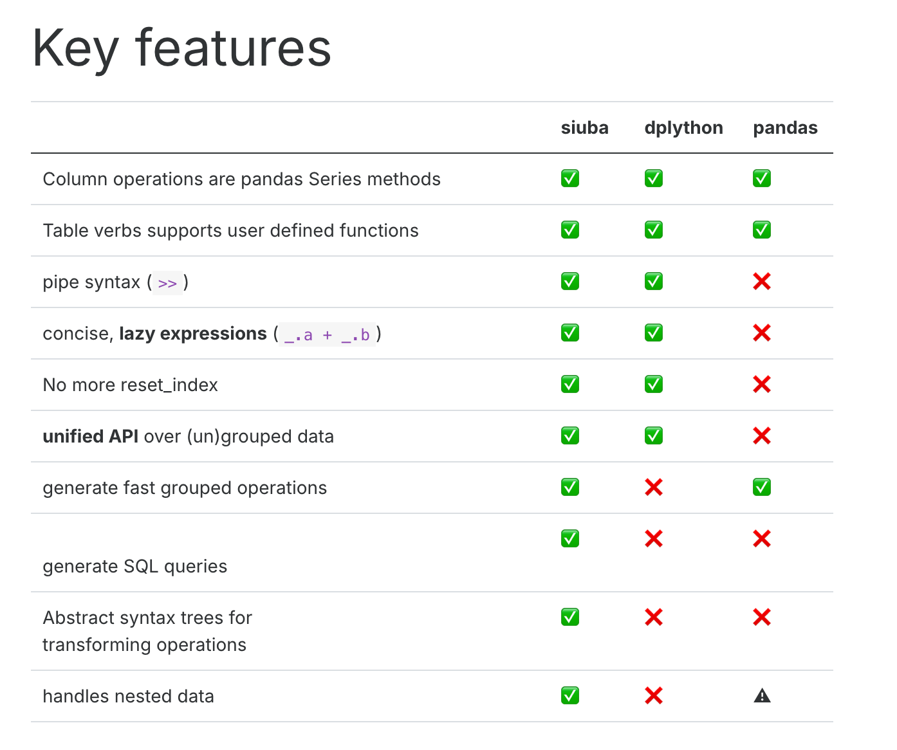

Code
import os
os.system('pip install siuba')

Name: siuba
Version: 0.4.4
Summary: A package for quick, scrappy analyses with pandas and SQL
Home-page: https://github.com/machow/siuba
Author: Michael Chow
Author-email: mc_al_gh_siuba@fastmail.com
License: MIT
Location: /Library/Frameworks/Python.framework/Versions/3.11/lib/python3.11/site-packages
Requires: numpy, pandas, PyYAML, SQLAlchemy
Required-by: 0exclude
| mpg | cyl | disp | hp | drat | wt | qsec | vs | am | gear | carb | gear2 | gear3 | qsec2 | |
|---|---|---|---|---|---|---|---|---|---|---|---|---|---|---|
| 0 | 21.0 | 6 | 160.0 | 110 | 3.90 | 2.620 | 16.46 | 0 | 1 | 4 | 4 | 5 | long | short |
| 1 | 21.0 | 6 | 160.0 | 110 | 3.90 | 2.875 | 17.02 | 0 | 1 | 4 | 4 | 5 | long | Medium |
| 2 | 22.8 | 4 | 108.0 | 93 | 3.85 | 2.320 | 18.61 | 1 | 1 | 4 | 1 | 5 | long | long |
| 3 | 21.4 | 6 | 258.0 | 110 | 3.08 | 3.215 | 19.44 | 1 | 0 | 3 | 1 | 4 | short | long |
| 4 | 18.7 | 8 | 360.0 | 175 | 3.15 | 3.440 | 17.02 | 0 | 0 | 3 | 2 | 4 | short | Medium |
| mpg | cyl | disp | hp | drat | wt | qsec | vs | am | gear | carb | |
|---|---|---|---|---|---|---|---|---|---|---|---|
| 0 | 21.0 | 6 | 160.0 | 110 | 3.90 | 2.620 | 16.46 | 0 | 1 | 4 | 4 |
| 1 | 21.0 | 6 | 160.0 | 110 | 3.90 | 2.875 | 17.02 | 0 | 1 | 4 | 4 |
| 2 | 22.8 | 4 | 108.0 | 93 | 3.85 | 2.320 | 18.61 | 1 | 1 | 4 | 1 |
| 7 | 24.4 | 4 | 146.7 | 62 | 3.69 | 3.190 | 20.00 | 1 | 0 | 4 | 2 |
| 8 | 22.8 | 4 | 140.8 | 95 | 3.92 | 3.150 | 22.90 | 1 | 0 | 4 | 2 |
| 9 | 19.2 | 6 | 167.6 | 123 | 3.92 | 3.440 | 18.30 | 1 | 0 | 4 | 4 |
| 10 | 17.8 | 6 | 167.6 | 123 | 3.92 | 3.440 | 18.90 | 1 | 0 | 4 | 4 |
| 17 | 32.4 | 4 | 78.7 | 66 | 4.08 | 2.200 | 19.47 | 1 | 1 | 4 | 1 |
| 18 | 30.4 | 4 | 75.7 | 52 | 4.93 | 1.615 | 18.52 | 1 | 1 | 4 | 2 |
| 19 | 33.9 | 4 | 71.1 | 65 | 4.22 | 1.835 | 19.90 | 1 | 1 | 4 | 1 |
| 25 | 27.3 | 4 | 79.0 | 66 | 4.08 | 1.935 | 18.90 | 1 | 1 | 4 | 1 |
| 31 | 21.4 | 4 | 121.0 | 109 | 4.11 | 2.780 | 18.60 | 1 | 1 | 4 | 2 |
| mpg | cyl | disp | hp | drat | wt | qsec | vs | am | gear | carb | |
|---|---|---|---|---|---|---|---|---|---|---|---|
| 0 | 21.0 | 6 | 160.0 | 110 | 3.90 | 2.620 | 16.46 | 0 | 1 | 4 | 4 |
| 1 | 21.0 | 6 | 160.0 | 110 | 3.90 | 2.875 | 17.02 | 0 | 1 | 4 | 4 |
| 3 | 21.4 | 6 | 258.0 | 110 | 3.08 | 3.215 | 19.44 | 1 | 0 | 3 | 1 |
| 5 | 18.1 | 6 | 225.0 | 105 | 2.76 | 3.460 | 20.22 | 1 | 0 | 3 | 1 |
| 9 | 19.2 | 6 | 167.6 | 123 | 3.92 | 3.440 | 18.30 | 1 | 0 | 4 | 4 |
| 10 | 17.8 | 6 | 167.6 | 123 | 3.92 | 3.440 | 18.90 | 1 | 0 | 4 | 4 |
| 26 | 26.0 | 4 | 120.3 | 91 | 4.43 | 2.140 | 16.70 | 0 | 1 | 5 | 2 |
| 27 | 30.4 | 4 | 95.1 | 113 | 3.77 | 1.513 | 16.90 | 1 | 1 | 5 | 2 |
| 28 | 15.8 | 8 | 351.0 | 264 | 4.22 | 3.170 | 14.50 | 0 | 1 | 5 | 4 |
| 29 | 19.7 | 6 | 145.0 | 175 | 3.62 | 2.770 | 15.50 | 0 | 1 | 5 | 6 |
| 30 | 15.0 | 8 | 301.0 | 335 | 3.54 | 3.570 | 14.60 | 0 | 1 | 5 | 8 |
| cyl | mpg | hp | |
|---|---|---|---|
| 2 | 4 | 22.8 | 93 |
| 0 | 6 | 21.0 | 110 |
| 1 | 6 | 21.0 | 110 |
| 3 | 6 | 21.4 | 110 |
| 4 | 8 | 18.7 | 175 |
keep data in left which not in right
keep data in right which not in left
| id | price_x | price_y | price_z | |
|---|---|---|---|---|
| 0 | 1 | 0.1 | 0.4 | 0.7 |
| 1 | 2 | 0.2 | 0.5 | 0.8 |
Below 3 method will give same result
| id | measure | value | |
|---|---|---|---|
| 0 | 1 | price_x | 0.1 |
| 1 | 2 | price_x | 0.2 |
| 2 | 1 | price_y | 0.4 |
| 3 | 2 | price_y | 0.5 |
| 4 | 1 | price_z | 0.7 |
| 5 | 2 | price_z | 0.8 |
| id | measure | value | |
|---|---|---|---|
| 0 | 1 | price_x | 0.1 |
| 1 | 2 | price_x | 0.2 |
| 2 | 1 | price_y | 0.4 |
| 3 | 2 | price_y | 0.5 |
| 4 | 1 | price_z | 0.7 |
| 5 | 2 | price_z | 0.8 |
| text | num | |
|---|---|---|
| 0 | abc | 3 |
| 1 | DDD | 4 |
| 2 | 1243c | 7 |
| 3 | aeEe | 8 |
| text | num | text_new1 | text_new2 | text_new3 | text_new4 | |
|---|---|---|---|---|---|---|
| 0 | abc | 3 | T | T | T | F |
| 1 | DDD | 4 | F | F | F | F |
| 2 | 1243c | 7 | F | F | T | T |
| 3 | aeEe | 8 | F | T | F | F |
Use .str.replace(…, regex=True) with regular expressions to replace patterns in strings.
For example, the code below uses “p.”, where . is called a wildcard–which matches any character.
Use str.extract() with a regular expression to pull out a matching piece of text.
For example the regular expression “^(.*) ” contains the following pieces:
a matches the literal letter “a”
.* has a . which matches anything, and * which modifies it to apply 0 or more times.
| dates | raw | |
|---|---|---|
| 0 | 2021-01-02 | 2023-04-05 06:07:08 |
| 1 | 2021-02-03 | 2024-05-06 07:08:09 |
| dates | raw | month | date_format_raw | date_format_raw_year | |
|---|---|---|---|---|---|
| 0 | 2021-01-02 | 2023-04-05 06:07:08 | January | 2023-04-05 06:07:08 | 2023 |
| 1 | 2021-02-03 | 2024-05-06 07:08:09 | February | 2024-05-06 07:08:09 | 2024 |
<class 'pandas.core.frame.DataFrame'>
RangeIndex: 2 entries, 0 to 1
Data columns (total 5 columns):
# Column Non-Null Count Dtype
--- ------ -------------- -----
0 dates 2 non-null datetime64[ns]
1 raw 2 non-null object
2 month 2 non-null object
3 date_format_raw 2 non-null datetime64[ns]
4 date_format_raw_year 2 non-null int32
dtypes: datetime64[ns](2), int32(1), object(2)
memory usage: 204.0+ bytesfrom sqlalchemy import create_engine
from siuba.sql import LazyTbl
from siuba import _, group_by, summarize, show_query, collect
from siuba.data import mtcars
# copy in to sqlite, using the pandas .to_sql() method
engine = create_engine("sqlite:///:memory:")
mtcars.to_sql("mtcars", engine, if_exists = "replace")32# Source: lazy query # DB Conn: Engine(sqlite:///:memory:) # Preview:
| index | mpg | cyl | disp | hp | drat | wt | qsec | vs | am | gear | carb | |
|---|---|---|---|---|---|---|---|---|---|---|---|---|
| 0 | 0 | 21.0 | 6 | 160.0 | 110 | 3.90 | 2.620 | 16.46 | 0 | 1 | 4 | 4 |
| 1 | 1 | 21.0 | 6 | 160.0 | 110 | 3.90 | 2.875 | 17.02 | 0 | 1 | 4 | 4 |
| 2 | 2 | 22.8 | 4 | 108.0 | 93 | 3.85 | 2.320 | 18.61 | 1 | 1 | 4 | 1 |
| 3 | 3 | 21.4 | 6 | 258.0 | 110 | 3.08 | 3.215 | 19.44 | 1 | 0 | 3 | 1 |
| 4 | 4 | 18.7 | 8 | 360.0 | 175 | 3.15 | 3.440 | 17.02 | 0 | 0 | 3 | 2 |
# .. may have more rows
because lazy expressions,the collect function is actually running the sql.
mpg avg_hp
0 10.4 210.0
1 13.3 245.0
2 14.3 245.0
3 14.7 230.0
4 15.0 335.0
5 15.2 165.0
6 15.5 150.0
7 15.8 264.0
8 16.4 180.0
9 17.3 180.0
10 17.8 123.0
11 18.1 105.0
12 18.7 175.0
13 19.2 149.0
14 19.7 175.0
15 21.0 110.0
16 21.4 109.5
17 21.5 97.0
18 22.8 94.0
19 24.4 62.0
20 26.0 91.0
21 27.3 66.0
22 30.4 82.5
23 32.4 66.0
24 33.9 65.0https://siuba.org/
---
title: "Data manipulation with siuba"
execute:
warning: false
error: false
format:
html:
toc: true
toc-location: right
code-fold: show
code-tools: true
number-sections: true
code-block-bg: true
code-block-border-left: "#31BAE9"
---
{width="434"}
## Comparison with different python dataframe package
{width="656"}
## Package download
```{python}
#| eval: false
import os
os.system('pip install siuba')
```
## load package
```{python}
import pandas as pd
import numpy as np
import matplotlib.pylab as plt
import seaborn as sns
from siuba.data import mtcars,penguins
from siuba.siu import call
from siuba import _, mutate, filter, group_by, summarize,show_query
from siuba import *
from siuba.data import mtcars,penguins
```
```{python}
import os
os.system('pip show siuba')
```
```{python}
small_mtcars = mtcars >> select(_.cyl, _.mpg, _.hp)>> head(5)
small_penguins=penguins>> head(5)
```
## select column
```{python}
small_mtcars >> select(_.cyl, _.mpg)
```
exclude
```{python}
small_mtcars >> select(~_.cyl)
```
## Renaming column
```{python}
small_mtcars >> rename(new_name_mpg = _.mpg)
```
## Create column
### Mutate
```{python}
mtcars.head()>> mutate(gear2 = _.gear+1
,gear3=if_else(_.gear > 3, "long", "short")
,qsec2=case_when({
_.qsec <= 17: "short",
_.qsec <= 18: "Medium",
True: "long"
})
)
```
### Transmute,create column and only keep this column
```{python}
mtcars.head()>> transmute(gear2 = _.gear+1)
```
## Filter rows
```{python}
mtcars>> filter(_.gear ==4)
```
### Filters with AND conditions
```{python}
mtcars >> filter((_.cyl >4) & (_.gear == 5))
```
### Filters with OR conditions
```{python}
mtcars >> filter((_.cyl == 6) | (_.gear == 5))
```
### Dropping NA values
## group by
### average,min,max,sum
```{python}
tbl_query = (mtcars
>> group_by(_.cyl)
>> summarize(avg_hp = _.hp.mean()
,min_hp=_.hp.min()
,max_hp=_.hp.max()
,totol_disp=_.disp.sum()
)
)
tbl_query
```
### count
```{python}
mtcars >> group_by(_.cyl) >> summarize(n = _.shape[0])
```
## order rows
```{python}
small_mtcars >> arrange(_.hp)
```
### Sort in descending order
```{python}
small_mtcars >> arrange(-_.hp)
```
### Arrange by multiple variables
```{python}
small_mtcars >> arrange(_.cyl, -_.mpg)
```
## join
```{python}
lhs = pd.DataFrame({'id': [1,2,3], 'val': ['lhs.1', 'lhs.2', 'lhs.3']})
rhs = pd.DataFrame({'id': [1,2,4], 'val': ['rhs.1', 'rhs.2', 'rhs.3']})
```
```{python}
lhs
```
```{python}
rhs
```
### inner_join
```{python}
result=lhs >> inner_join(_, rhs, on="id")
result
```
### full join
```{python}
result=rhs >> full_join(_, lhs, on="id")
result
```
### left join
```{python}
result=lhs >> left_join(_, rhs, on="id")
result
```
### anti join
keep data in left which not in right
```{python}
result=lhs >> anti_join(_, rhs, on="id")
result
```
keep data in right which not in left
```{python}
result=rhs >> anti_join(_, lhs, on="id")
result
```
## Reshape tables
```{python}
costs = pd.DataFrame({
'id': [1,2],
'price_x': [.1, .2],
'price_y': [.4, .5],
'price_z': [.7, .8]
})
costs
```
### Gather data long
Below 3 method will give same result
```{python}
# selecting each variable manually
costs >> gather('measure', 'value', _.price_x, _.price_y, _.price_z)
```
```{python}
# selecting variables using a slice
costs >> gather('measure', 'value', _["price_x":"price_z"])
```
```{python}
# selecting by excluding id
costs >> gather('measure', 'value', -_.id)
```
### Spread data wide
```{python}
```
## string
```{python}
df = pd.DataFrame({'text': ['abc', 'DDD','1243c','aeEe'], 'num': [3, 4,7,8]})
df
```
### upper case
```{python}
df>> mutate(text_new=_.text.str.upper())
```
### lower case
```{python}
df>> mutate(text_new=_.text.str.lower())
```
### match
```{python}
df>> mutate(text_new1=if_else(_.text== "abc",'T','F')
,text_new2=if_else(_.text.str.startswith("a"),'T','F')
,text_new3=if_else(_.text.str.endswith("c"),'T','F')
,text_new4=if_else(_.text.str.contains("4"),'T','F')
)
```
### concatenation
```{python}
df>> mutate(text_new1=_.text+' is '+_.text
)
```
### replace
Use .str.replace(..., regex=True) with regular expressions to replace patterns in strings.
For example, the code below uses "p.", where . is called a wildcard–which matches any character.
```{python}
df>> mutate(text_new1=_.text.str.replace("a.", "XX", regex=True)
)
```
### extract
Use str.extract() with a regular expression to pull out a matching piece of text.
For example the regular expression “^(.*) ” contains the following pieces:
- a matches the literal letter “a”
- .* has a . which matches anything, and * which modifies it to apply 0 or more times.
```{python}
df>> mutate(text_new1=_.text.str.extract("a(.*)")
,text_new2=_.text.str.extract("(.*)c")
)
```
## date
```{python}
df_dates = pd.DataFrame({
"dates": pd.to_datetime(["2021-01-02", "2021-02-03"]),
"raw": ["2023-04-05 06:07:08", "2024-05-06 07:08:09"],
})
df_dates
```
```{python}
from datetime import datetime
df_date=df_dates>>mutate(month=_.dates.dt.month_name()
,date_format_raw = call(pd.to_datetime, _.raw)
,date_format_raw_year=_.date_format_raw.dt.year
)
df_date
```
```{python}
df_date.info()
```
## using siuba with database
### set up a sqlite database, with an mtcars table.
```{python}
from sqlalchemy import create_engine
from siuba.sql import LazyTbl
from siuba import _, group_by, summarize, show_query, collect
from siuba.data import mtcars
# copy in to sqlite, using the pandas .to_sql() method
engine = create_engine("sqlite:///:memory:")
mtcars.to_sql("mtcars", engine, if_exists = "replace")
```
### create table
```{python}
# Create a lazy SQL DataFrame
tbl_mtcars = LazyTbl(engine, "mtcars")
tbl_mtcars
```
### create query
```{python}
# connect with siuba
tbl_query = (tbl_mtcars
>> group_by(_.mpg)
>> summarize(avg_hp = _.hp.mean())
)
tbl_query
```
### show query
```{python}
tbl_query >> show_query()
```
### Collect to DataFrame
because lazy expressions,the collect function is actually running the sql.
```{python}
data=tbl_query >> collect()
print(data)
```
## reference:
https://siuba.org/